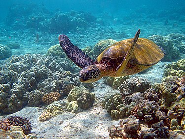

| 綠蠵龜 | |  |

生物介紹：
肯氏龜（學名：Lepidochelys kempii，英語：Kemp's ridley sea turtle，或Atlantic ridley sea turtle），又譯肯普氏麗龜，是一種極度瀕危的海龜。牠們是麗龜屬中現在依然存活著的兩種海龜之一，另一種是欖蠵龜。肯氏龜是一種小型海龜，成年體也只有60～90公分（24～35英寸）長，平均重45公斤（99英磅）。其他方面都與典型的海龜相同，例如喙狀嘴、體側的鰭狀肢。肯氏龜的食物包括一些軟體動物、甲殼亞門動物、水母、藻類或者海膽。
分布：
肯氏龜偏好溫暖水域，當水溫低於10℃，海龜的心率就會減慢，活動能力喪失。但是也居住在更北部的新澤西州。從大西洋到墨西哥灣都有分布。產卵點則多數位於墨西哥塔毛利帕斯州，但是有時也會前往美國德克薩斯州的帕德雷島。
原因：
人為捕殺是肯氏龜數量迅速減少的最初原因，而今天其主要威脅則是棲息地喪失、海洋污染以及漁網。2010年墨西哥灣漏油事件發生後，有156隻海龜因此死亡，其中很多都是肯氏龜。
保育：
1960年代，墨西哥率先開始保護肯氏龜，在美國，肯氏龜在1970年被列入了瀕危物種保護法案的名單。後來又列入1973年的瀕危物種法案。2010年4月美國國家海洋漁業局也提出了相關草案，其中包括一個威脅測評。因為墨西哥灣是肯氏龜的主要棲息地之一，科學家們開始從附近的海灘等地區收集肯氏龜的卵，整個計劃從阿拉巴馬州到佛羅里達州沿岸得到了大約7萬枚卵，其中一些被送往NASA甘迺迪航天中心進行孵化。